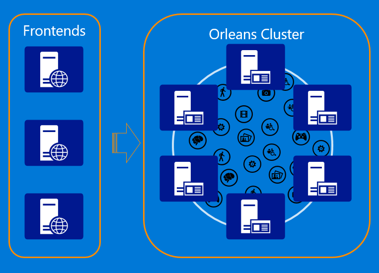

什么是Grains客户？
术语“客户端”或有时“Grains客户端”用于与Grains交互的应用程序代码，但它本身不是Grains逻辑的一部分。客户端代码在Orleans服务器集群(称为silos)之外运行，这些服务器集群承载Grains。因此，客户端充当到集群和应用程序所有Grain的连接器或管道。

通常，在前端web服务器上使用客户端连接到作为中间层的orleans集群，其中grains执行业务逻辑。在典型设置中，前端Web服务器：
- 接收Web请求
- 执行必要的身份验证和授权验证
- 决定应处理请求的Grains
- 使用Grain客户端对Grain进行一个或多个方法调用
- 处理grain调用和任何返回值的成功完成或失败
- 发送对Web请求的响应
Grains客户端初始化
在使用grain客户端调用orleans集群中托管的grain之前，需要对其进行配置、初始化并连接到集群。
配置通过客户端生成器以及许多补充选项类，其中包含用于以编程方式配置客户端的配置属性层次结构。
更多信息可以在客户端配置指南是的。
客户端配置示例：
var client = new ClientBuilder()
// Clustering information
.Configure<ClusterOptions>(options =>
{
options.ClusterId = "my-first-cluster";
options.ServiceId = "MyOrleansService";
})
// Clustering provider
.UseAzureStorageClustering(options => options.ConnectionString = connectionString)
// Application parts: just reference one of the grain interfaces that we use
.ConfigureApplicationParts(parts => parts.AddApplicationPart(typeof(IValueGrain).Assembly))
.Build();
最后，我们需要调用Connect()方法，使其连接到Orleans群集。它是一个异步方法，返回Task是的。所以我们需要等待它的完成await或.等等()是的。
await client.Connect();
调用给Grains
从客户那里调用给grain和在grain代码中进行这样的调用是的。相同的getgrain<t>(key)方法，其中T是目标grains接口，在两种情况下都使用获取Grains引用是的。细微的区别在于我们调用的工厂对象获取grains是的。在客户端代码中，我们通过连接的客户端对象来实现这一点。
IPlayerGrain player = client.GetGrain<IPlayerGrain>(playerId);
Task t = player.JoinGame(game)
await t;
对grain方法的调用返回Task或者Task<t>根据grains接口规则是的。客户可以使用await关键字异步等待返回的Task没有阻塞线程，或者在某些情况下等待()方法来阻止当前执行线程。
从客户端代码和从另一个Grain内部调用grains的主要区别在于grains的单线程执行模型。Grains被orleans运行时限制为单线程，而客户端可能是多线程的。Orleans没有在客户端提供任何这样的保证，因此客户端需要使用适合其环境的任何同步构造来管理自己的并发性—锁、事件，Task等等。
接收通知
在某些情况下，简单的请求-响应模式是不够的，客户端需要接收异步通知。例如，当某个用户发布了她正在跟踪的新消息时，该用户可能希望收到通知。
观察者是一种这样的机制，它允许将客户端对象公开为类似于grains的目标，以供grains调用。对观察者的访问并没有提供任何成功或失败的迹象，因为它们是作为单向尽力信息发送的。因此，应用程序代码有责任在必要时在观察者之上构建更高级别的可靠性机制。
另一种可用于向客户端传递异步消息的机制是Streams是的。流暴露了单个消息传递成功或失败的迹象，因此能够与客户端进行可靠的通信。
例子
这是上面给出的一个客户端应用程序的扩展版本，该客户端应用程序连接到Orleans，查找玩家帐户，向观察家订阅玩家参与的游戏会话的更新，并打印出通知，直到程序手动终止。
namespace PlayerWatcher
{
class Program
{
/// <summary>
/// Simulates a companion application that connects to the game
/// that a particular player is currently part of, and subscribes
/// to receive live notifications about its progress.
/// </summary>
static void Main(string[] args)
{
RunWatcher().Wait();
// Block main thread so that the process doesn't exit.
// Updates arrive on thread pool threads.
Console.ReadLine();
}
static async Task RunWatcher()
{
try
{
var client = new ClientBuilder()
// Clustering information
.Configure<ClusterOptions>(options =>
{
options.ClusterId = "my-first-cluster";
options.ServiceId = "MyOrleansService";
})
// Clustering provider
.UseAzureStorageClustering(options => options.ConnectionString = connectionString)
// Application parts: just reference one of the grain interfaces that we use
.ConfigureApplicationParts(parts => parts.AddApplicationPart(typeof(IValueGrain).Assembly))
.Build();
// Hardcoded player ID
Guid playerId = new Guid("{2349992C-860A-4EDA-9590-000000000006}");
IPlayerGrain player = client.GetGrain<IPlayerGrain>(playerId);
IGameGrain game = null;
while (game == null)
{
Console.WriteLine("Getting current game for player {0}...", playerId);
try
{
game = await player.GetCurrentGame();
if (game == null) // Wait until the player joins a game
{
await Task.Delay(5000);
}
}
catch (Exception exc)
{
Console.WriteLine("Exception: ", exc.GetBaseException());
}
}
Console.WriteLine("Subscribing to updates for game {0}...", game.GetPrimaryKey());
// Subscribe for updates
var watcher = new GameObserver();
await game.SubscribeForGameUpdates(
await client.CreateObjectReference<IGameObserver>(watcher));
Console.WriteLine("Subscribed successfully. Press <Enter> to stop.");
}
catch (Exception exc)
{
Console.WriteLine("Unexpected Error: {0}", exc.GetBaseException());
}
}
}
/// <summary>
/// Observer class that implements the observer interface. Need to pass a grain reference to an instance of this class to subscribe for updates.
/// </summary>
class GameObserver : IGameObserver
{
// Receive updates
public void UpdateGameScore(string score)
{
Console.WriteLine("New game score: {0}", score);
}
}
}
}